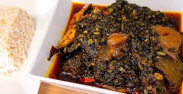

Potato Greens

Description
Potato green dish, also known as "potato greens" is a flavorful and hearty dish that
celebrates the versatility of potatoes and their greens. This dish is popular in
various cuisines around the world, including African and Asian. It features the
tender leaves and stems of potato plants, which are cooked to perfection with an
array of aromatic ingredients. The potato greens are typically sautéed with onions,
garlic, and other spices, creating a savory and aromatic base. Additional
ingredients such as tomatoes, peppers, and protein like meat or beans can be
added to enhance the flavor and texture of the dish. The resulting potato green
dish offers a satisfying combination of tender greens, creamy potatoes,
and well-balanced flavors that make it a delightful and comforting culinary
experience.
Ingredients
- Potato greens: The tender leaves and stems of potato plants are the star
ingredient. These can be obtained by harvesting the greens from fresh potato
plants or can be found at specialty grocery stores or farmers' markets.
- Potatoes: Choose medium-sized potatoes that are suitable for cooking. They
will add a creamy texture and substance to the dish.
- Aromatics: Onions and garlic are essential aromatics that provide a savory
base for the dish.
- Tomatoes: Fresh tomatoes or canned diced tomatoes can be used to add a tangy
sweetness and depth of flavor.
- Peppers: Optional peppers like bell peppers, chili peppers, or hot peppers
can be added to give the dish a bit of heat and a vibrant kick.
- Protein (optional): You can include protein sources such as meat (chicken,
beef, or pork), seafood (shrimp, fish), or plant-based options like beans
or tofu, depending on your preference.
- Cooking oil: Use a neutral oil like vegetable oil or olive oil for sautéing
the aromatics and cooking the dish.
- Seasonings and spices: Common seasonings include salt, pepper, paprika, cumin,
and any additional herbs or spices you enjoy.
Steps
- Clean and prepare the potato greens: Rinse the potato greens thoroughly under
cold water to remove any dirt or debris. Trim off any tough stems or damaged
leaves. Chop the greens into manageable pieces and set them aside.
- Prepare the potatoes: Peel the potatoes and cut them into bite-sized cubes.
Rinse the potato cubes under cold water to remove excess starch and set them
aside.
- Sauté the aromatics: Heat a tablespoon of cooking oil in a large skillet or
pot over medium heat. Add finely chopped onions and minced garlic to the hot
oil. Sauté until the onions become translucent and fragrant.
- Add tomatoes and peppers: Dice fresh tomatoes and peppers, if using, and add
them to the skillet with the sautéed aromatics. Cook for a few minutes until
the tomatoes soften and release their juices.
- Cook the potatoes: Add the potato cubes to the skillet and stir them into the
mixture. Ensure that the potatoes are well-coated with the flavors from the
aromatics, tomatoes, and peppers. You can also add a small amount of water
or broth to help cook the potatoes.
- Cook the potato greens: Add the chopped potato greens to the skillet, stirring
them into the mixture. The greens will wilt and cook down as they release
their moisture. Cover the skillet or pot and let the greens simmer for
about 15-20 minutes, or until the potatoes are tender and the greens are
cooked to your desired level of doneness.
- Season the dish: Season the potato greens with salt, pepper, and any other
desired spices or herbs. Taste and adjust the seasonings to suit your
preference.
- Optional protein addition: If desired, you can add cooked meat, seafood,
or plant-based protein such as beans or tofu to the dish. Stir them in during
the last few minutes of cooking, allowing them to heat through.
- Serve: Potato greens are typically served as a main dish or as a side dish
alongside rice, bread, or other grains. Plate the potato greens and garnish
with fresh herbs or a drizzle of olive oil, if desired.